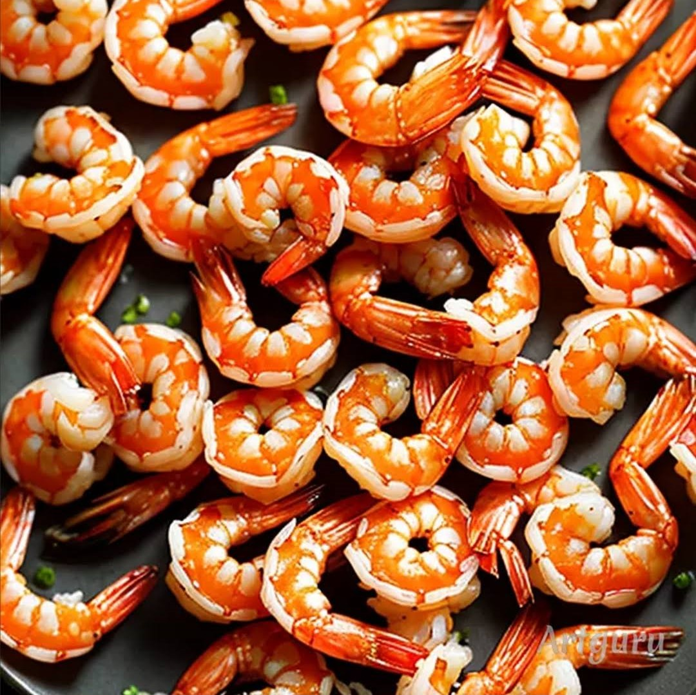
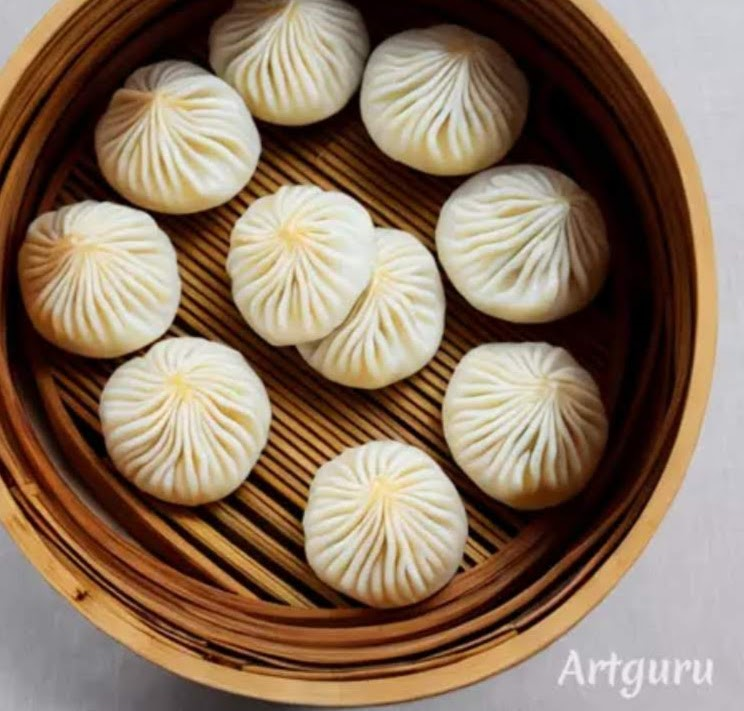
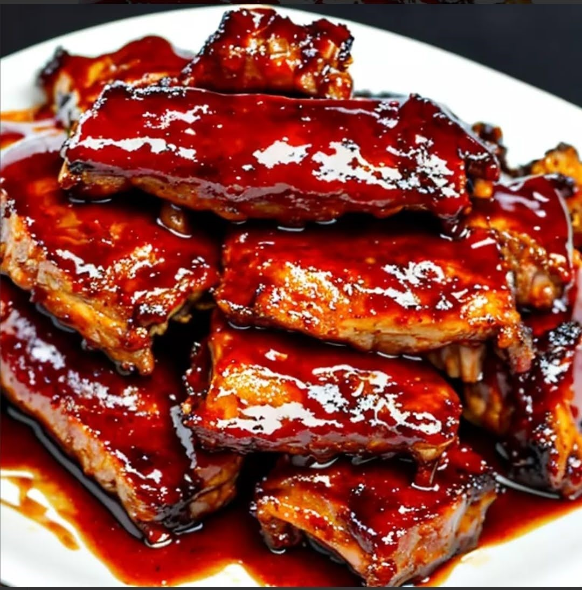

|  |  |  | |
| 麻醬雞絲拌涼麵 | 胡椒蝦 | 小籠包 | 糖醋排骨 |
網路的使用安全是很多人共同努力的成果，不管是網路安全
食品安全是多人努力實現的過程網路系統的優化完善才有今天方便的生活
，鼓勵我不斷前進動力我心裡是很感激和感謝就像沒有一個工作是輕鬆的是要有付
出才有回報選擇的路不要後悔要走下去要學以致用，掌握思
考過程，就掌握做事要點，做事沒有很複雜，沒有很簡單只
有要不要做這是換個角度也許沒有很複雜，
我每天都在思考要把事情做好解決眼下的困進，看輕自己的
內心的世界明白自己的難處人生的事物並是按照自己的意願走下
去，而是會改變的自己的命運是由自己來掌握著這句話是不斷，
在我腦海中回憶著每次進展和進步都是一次收穫讓我走這路持之以恒的走下去，